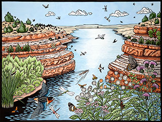

Written and illustrated by Margie Crisp
Foreword by Andrew Sansom
Texas A&M University Press
River Books, sponsored by The Meadows Center for Water and the Environment,
Texas State University
Winner of the Ron Tyler Award for the Best Illustrated Book on Texas History and Culture for 2012, presented by the Texas State Historical Association
From its beginning at the edge of the High Plains of Texas, the Colorado River flows some 800 miles through twenty counties to meet the Gulf of Mexico. On its way, it fills nine lakes and reservoirs to supply water and electricity to vast areas of Texas. The river runs through the center of towns like Colorado City, La Grange, Wharton, and Austin. Over 1.1 million people in Central Texas alone depend on the Colorado River's water for drinking, irrigation, electricity, and industry.
The Colorado River is one of the most utilized and important rivers in Texas yet it is also one of the most underappreciated. River of Contrasts: The Texas Colorado interweaves the complex stories of the River's past with the present and future using personal narrative and interviews with land owners and river people to link local history and lore, natural history, geology and current issues.
Each of the six chapters centers on a section or area of the river which roughly correlates to a Texas ecoregion. In each of these regions, the river develops a unique character that is reflected in the natural history and ecology, cultural importance, geology, historical importance, environmental issues, and current conflicts or concerns. The book entertains, informs, and educates readers about the natural beauty of the existing river, its transformative power, the multitude of ways the river is used, and potential threats to the river's existence.
Over fifty hand colored linocuts, lithographs, silkscreen prints and photographs by the author illustrate the changing character of the river and its diverse inhabitants. Detailed maps of each section encourage the reader to travel down the river with the author as she hikes, wades, kayaks, floats, canoes, and boats the Colorado River from the headwaters at the edge of the Caprock Escarpment down to Matagorda Bay.
What Readers Are Saying
"...another outstanding volume in the "River Books" series...this is not your run-of-the-mill field guide or travelogue...not only is the writing top-notch, but Crisp includes dozens of beautiful color sketches of the Colorado and the Texas wildscape surrounding it."--Donnis Baggett, editor and publisher of the Waco Tribune-Herald, May 2012
"River of Contrasts: The Texas Colorado by writer and artist Margie Crisp (Texas A&M University Press, $29.95 flexbound) is a beautifully written, illustrated and designed tribute to the river that flows 860 miles across Texas to the Gulf of Mexico at Matagorda Bay."--Glenn Dromgoole, The Eagle, September 2012
"Crisp records her journey not only through her words, but also through vivid digital photo, rich silkscreens, and exceptional linocuts and lithographs. Her magnificent artwork is rich and vibrant. With each new piece of art the reader is rewarded for turning the next page. Crisp clearly has a rare combination of gifts as an artist, writer, and naturalist, and is the official artist of the 2012 Texas Book Festival."—Todd Votteler,
Aether Magazine, October 2012
"Margie Crisp's magnificent new book, "River of Contrasts: The Texas Colorado," (River Books, $29.95) is as full of environmental lessons as the long, winding river is in places sometimes dry. The book is an insight-filled travelogue, based on kayaking trips the author and her husband took from as close to the river's beginning as they could get in West Texas to its mouth in Matagorda County.
In addition to its rich content, which will remind any longtime reader of Texana of John Graves' 1960 classic "Goodbye to a River," Crisp illustrated it with her artwork along with photographs." Statesman.com, August 2012
"This coffee table-friendly book is gorgeous, but the book's beauty should not detract from the author's brutal warning. River of Contrasts: The Texas Colorado is more than a beautiful coffee table book – it is also a stirring defense of the river and a call to arms."—Steve Davis, Southwestern American Literature, Fall 2012
Read the entire review (PDF)
"In addition to being a skillful writer, Crisp is a talented and accomplished artist. River of Contrasts is beautiful and inspiring and will provide a legacy for one of Texas' most important rivers."—Jim Kimmel, Texas Books in Review, Summer 2012
Read the entire review (PDF)
"The author's love of her subject is reflected in both her remarkable illustrations and her flowing prose. The author's ability to capture both the inherent futility of taming wild rivers and the utter necessity of finding a shared commitment to a proper balance among competing forces is remarkable; to do so in a way that speaks to the reader's heart is what maker her work exceptional."--Gary Pinkerton, East Texas Historical Journal, Spring 2013
Read the entire review (PDF)